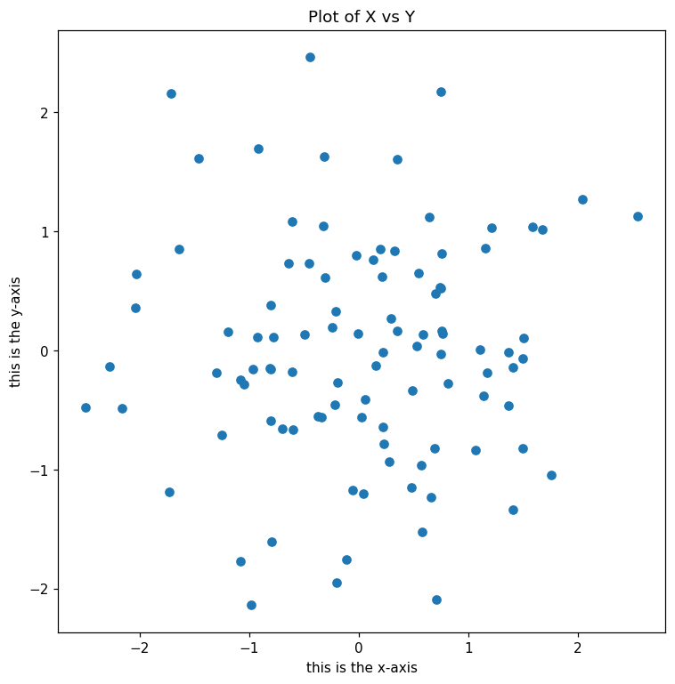
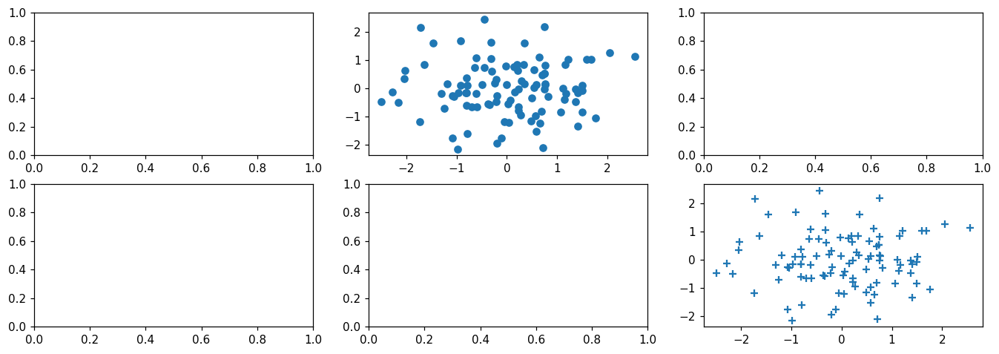
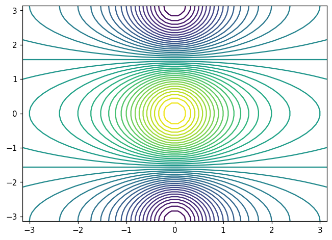
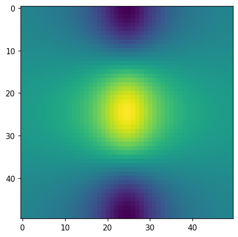
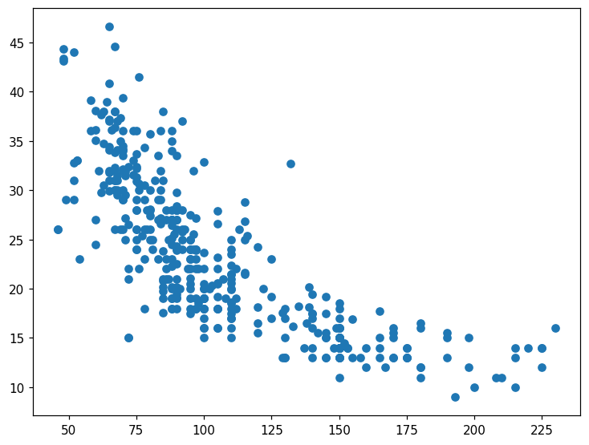
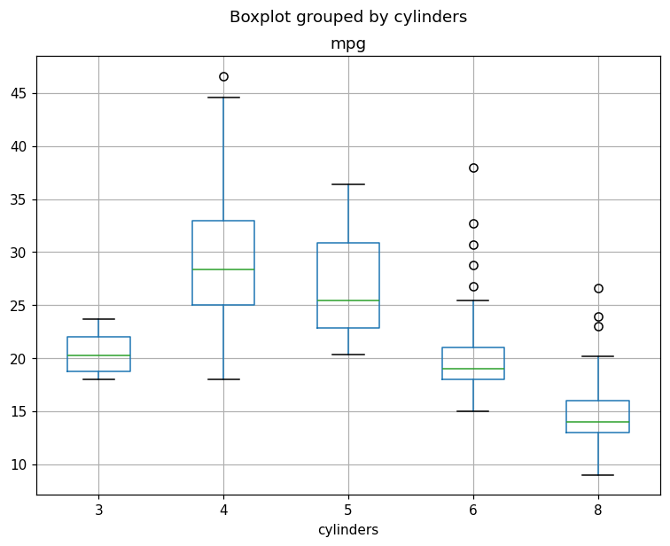
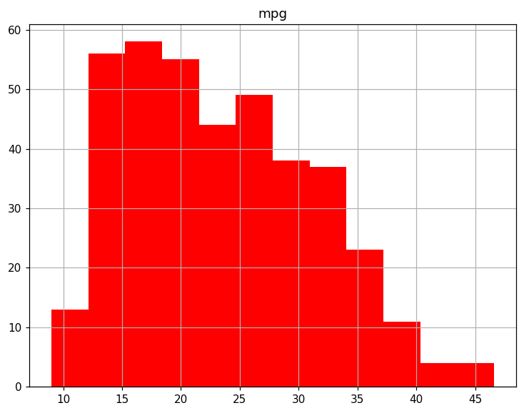
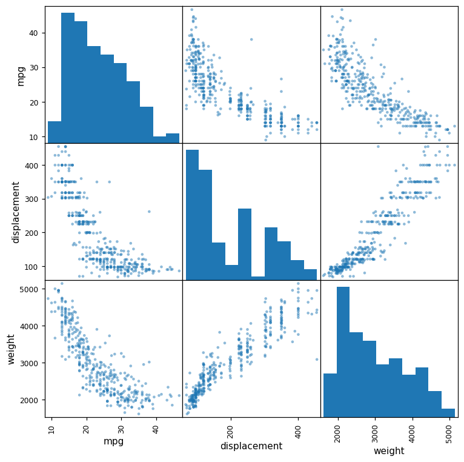

Chapter 2 · lab · book pages 40–62
Lab: introduction to Python
The book's first lab is a tour of the tools — numpy for numbers, matplotlib for pictures, pandas for tables — ending with a real dataset (Auto) that every later chapter comes back to. You already know basic Python, so this page skips the language basics and focuses on the parts that are new: array behaviour, indexing gotchas, loading messy data, and the plotting conventions the whole book uses.
Reading
- Do it This lab is meant to be run, not read. Open a notebook, type each block, and compare your output with the captured output below. Every output on this page was produced by actually running the code — versions are listed below the install step.
- Take from it
The habits:
import numpy as np,fig, ax = subplots(), trailing;to silence output,...-based column selection, andna_values=['?']for missing values. These five patterns appear in every lab in the book. - Skim if You already write numpy daily — then jump to 2.3.7, the data-loading section, which contains the only real "gotcha" of the lab.
Key ideas
A numpy array is not a list: + on two arrays
adds element by element, while + on two lists glues
them together. Reshaping a 1-D array into a matrix creates a
view, not a copy — write to one and you have written
to the other. A matplotlib figure has a canvas (the figure) and one
or more plots on it (the axes). A dataset can arrive with junk
values in it; the fix is one line: na_values=['?'] plus
dropna(). And a column is just a name — you must
reference it as Auto['horsepower'], not
horsepower, or Python will say it has never heard of
it.
Setup
Create a virtual environment and install the book's package. (Inside
a Jupyter notebook the book uses the magic command
%pip install ISLP instead — same thing, per-kernel.)
python3 -m venv .venv
source .venv/bin/activate
pip install ISLP pandas matplotlib scikit-learn statsmodels jupyterlab
jupyter labEvery output on this page was captured with:
Python 3.10.21
numpy 2.2.6 | pandas 2.3.3 | matplotlib 3.10.9
ISLP 0.4.1Your numbers will differ where randomness is
involved, and numpy 2 prints scalars as np.float64(...)
where the book (written on numpy 1) prints a bare number. Same value,
different wrapper.
- arrays vs lists
- shape / dtype / ndim
- reshape is a view
- default_rng for reproducibility
- fig + ax + subplots
- slices stop short
- [row, col] indexing
- na_values + dropna
- loc vs iloc
- describe / boxplot / hist
1. Getting started (2.3.1)
The lab opens by running a line of code in a notebook and showing
what a "cell" looks like: input lines begin with
In [1]:, and anything the cell produces comes back as
Out[1]:. The numbers are just execution order. First,
confirm what you are running:
import sys, numpy as np, pandas as pd, matplotlib
print('Python', sys.version.split()[0])
print('numpy', np.__version__, '| pandas', pd.__version__,
'| matplotlib', matplotlib.__version__)
import ISLP
print('ISLP', getattr(ISLP, '__version__', '(bundled)'))Python 3.10.21
numpy 2.2.6 | pandas 2.3.3 | matplotlib 3.10.9
ISLP 0.4.1Two small pieces of notebook etiquette from the book: a question
mark after a name, print?, asks Python to display that
function's help page instead of running it; and you can save
yourself a keystroke by running %pip install ISLP
inside the notebook, which installs into the kernel you are
actually using.
Why the version line matters
Every answer in this book depends on your library versions — a pandas method renamed last year will break a copy-pasted block from 2021. When an output does not match, check versions first.
2. Basic commands (2.3.2)
Python's own operators before any packages. The print function puts a
space between its arguments, which is why there are two spaces after
model with:
print('fit a model with ', 11, 'variables ')fit a model with 11 variables Numbers and text behave as you would expect:
3 + 5
"hello" + " " + "world"8
'hello world'Lists are sequences, and this is the one that trips people up: on
lists, + concatenates rather than adding
numbers. The book points out the result "may appear slightly
counterintuitive" — you asked to add two lists, and Python glued
them end to end:
x = [3, 4, 5]
x
y = [4, 9, 7]
x + y[3, 4, 5]
[3, 4, 5, 4, 9, 7]Hold that behaviour in mind: the very next section does the same two lines with numpy arrays and gets real arithmetic instead.
3. Numerical python: numpy (2.3.3)
numpy is the book's name for the abbreviation np. An
array is a grid of numbers with a fixed type; the moment both operands
are arrays, + means "add them up, position by
position":
import numpy as np
x = np.array([3, 4, 5])
y = np.array([4, 9, 7])
x + yarray([ 7, 13, 12])The book's central fact about numpy, stated once and never contradicted: a numpy array is generic for a multidimensional set of numbers, while matrices are two-dimensional arrays and vectors are one-dimensional arrays. Build a 2-D array and check its three descriptive attributes:
x = np.array([[1, 2], [3, 4]])
x
x.ndim
x.dtype
np.array([[1, 2], [3.0, 4]]).dtype
x.shapearray([[1, 2],
[3, 4]])
2
dtype('int64')
dtype('float64')
(2, 2)ndim— how many dimensions (2 = a matrix).dtype— what each entry is stored as. A single decimal anywhere promotes the whole array tofloat64; arrays are one type, no exceptions.shape— (rows, columns). A vector's shape is(3,)— note the trailing comma, because it is still a tuple.
Whole-array operations, which are the reason numpy exists — no loops, one line:
x = np.array([1, 2, 3, 4])
x.sum()np.int64(10)numpy 2 wraps scalars in their type name — the
book, written on numpy 1, prints a bare 10. Same value,
different wrapper.
Reshaping, and the view that is not a copy
Take six numbers and lay them out as a 2 × 3 matrix. Two things happen: the shape changes, and — this is the part worth remembering — the new matrix is a window onto the same memory, not a second copy:
x = np.array([1, 2, 3, 4, 5, 6])
print('beginning x:\n', x)
x_reshape = x.reshape((2, 3))
print('reshaped x:\n', x_reshape)
x_reshape[0, 0], x_reshape[1, 2]beginning x:
[1 2 3 4 5 6]
reshaped x:
[[1 2 3]
[4 5 6]]
(np.int64(1), np.int64(6))Row then column, both counted from zero: [0, 0] is the
first entry and [1, 2] is the last entry of the second
row. The matrix also reports its own shape, dimension count and
transpose:
x_reshape.shape, x_reshape.ndim, x_reshape.T((2, 3), 2, array([[5, 4],
[2, 5],
[3, 6]]))The transpose already shows a 5 in its top-left corner — it should be a 1. Nothing has gone wrong yet; we are about to see where it came from.
Now modify one cell of the matrix and print both arrays:
print('x before we modify x_reshape:\n', x)
print('x_reshape before we modify x_reshape:\n', x_reshape)
x_reshape[0, 0] = 5
print('x_reshape after we modify its top left element:\n', x_reshape)
print('x after we modify top left element of x_reshape:\n', x)x before we modify x_reshape:
[1 2 3 4 5 6]
x_reshape before we modify x_reshape:
[[1 2 3]
[4 5 6]]
x_reshape after we modify its top left element:
[[5 2 3]
[4 5 6]]
x after we modify top left element of x_reshape:
[5 2 3 4 5 6]reshape returns a view, not a copy
Nobody assigned to x, yet its first element changed
from 1 to 5 — because x and x_reshape
are two names for the same storage, laid out differently. Writing
through either one rewrites both. When you need an independent
array, ask for one explicitly with x.copy(). The
lesson generalises: if an output looks unrelated to your input,
check whether they share memory.
Which explains the next outputs — this is the same (now modified)
x, so the square roots and squares are of
[5 2 3 4 5 6]:
np.sqrt(x)
x ** 2
x ** 0.5array([2.23606798, 1.41421356, 1.73205081, 2. , 2.23606798,
2.44948974])
array([25, 4, 9, 16, 25, 36])
array([2.23606798, 1.41421356, 1.73205081, 2. , 2.23606798,
2.44948974])Raising to 0.5 is a square root, and
the book deliberately shows it: x ** 0.5 and
np.sqrt(x) are the same operation written two ways.
Random numbers you can reproduce
Generating data matters so much in this book that the lab gives it its own treatment. The old-style function still works:
x = np.random.normal(size=50)array([ 0.14046631, 0.44195196, -1.10661282, 0.71559764, 0.25868269,
0.2535459 , 0.40608757, 0.49208905, 1.2738995 , 0.02663953,
-0.49584252, -0.98311067, -1.54730115, 0.49962802, ... ])50 numbers, truncated here. They differ every run — and that is exactly the problem the next block solves.
Two arrays generated from the same random source have a correlation; here it is about 0.68, and your number will differ:
y = x + np.random.normal(loc=50, scale=1, size=50)
np.corrcoef(x, y)array([[1. , 0.67969028],
[0.67969028, 1. ]])The book's answer to "why did my output differ from yours?" is a
random number generator with a seed. Build one with
default_rng, and the same seed gives the same numbers
forever — this is how the book's figures stay reproducible, and how
you will check your homework:
rng = np.random.default_rng(1303)
print(rng.normal(scale=5, size=2))
rng2 = np.random.default_rng(1303)
print(rng2.normal(scale=5, size=2))[ 4.09482632 -1.07485605]
[ 4.09482632 -1.07485605]Two separate generators, one seed, identical output. This is how the book's figures stay reproducible — and how you can check that your homework matched the answer key. Change the seed and the two streams diverge immediately.
Descriptive statistics come in matching triples — the function form and the method form return the same number:
rng = np.random.default_rng(3)
y = rng.standard_normal(10)
np.mean(y), y.mean()
np.var(y), y.var(), np.mean((y - y.mean()) ** 2)
np.sqrt(np.var(y)), np.std(y)(np.float64(-0.1126795190952861), np.float64(-0.1126795190952861))
(np.float64(2.7243406406465125), np.float64(2.7243406406465125),
np.float64(2.7243406406465125))
(np.float64(1.6505576756498128), np.float64(1.6505576756498128))The middle line is the definition of variance printed by the computer: the average squared distance from the mean. The third line is its square root, the standard deviation — the measure reported almost everywhere in this book because it is in the same units as the data.
Finally, a table of random numbers with an axis argument:
X = rng.standard_normal((10, 3))
X
X.mean(axis=0)array([[ 0.22578661, -0.35263079, -0.28128742],
[-0.66804635, -1.05515055, -0.39080098],
[ 0.48194539, -0.23855361, 0.9577587 ],
[-0.19980213, 0.02425957, 1.54582085],
[ 0.54510552, -0.50522874, -0.18283897],
[ 0.54052513, 1.93508803, -0.26962033],
[-0.24355868, 1.0023136 , -0.88645994],
[-0.29172023, 0.88253897, 0.58035002],
[ 0.0915167 , 0.67010435, -2.82816231],
[ 1.02130682, -0.95964476, -1.66861984]])
array([ 0.15030588, 0.14030961, -0.34238602])axis=0 means "down the
columns"
X.mean(axis=0) returns three numbers — one per
column — by sliding down the rows. axis=1 would slide
across and return ten numbers, one per row. It is worth 30 seconds
to test both, because every group-by operation later in the book is
this argument wearing a nicer outfit.
4. Graphics (2.3.4)
matplotlib is not built into Python, so the lab imports it. The idiom the book teaches — and uses in every remaining lab — is two lines that split "the drawing" from "the plot":
from matplotlib.pyplot import subplots
fig, ax = subplots(figsize=(8, 8))Read those names carefully, because matplotlib's vocabulary is unusual:
- figure — the whole canvas / window. Several plots can live on one figure.
- axes — one plot on that canvas: it owns the x-axis, y-axis, labels, title and the data drawn inside. (Yes, in matplotlib "axes" is singular-plot, not the plural of "axis".)
Then draw into ax. A line plot, then a labelled scatter
— note the trailing ;, which suppresses the object dump
and is the book's quiet convention:
fig, ax = subplots(figsize=(8, 8))
x = rng.standard_normal(100)
y = rng.standard_normal(100)
ax.plot(x, y);
fig, ax = subplots(figsize=(8, 8))
ax.scatter(x, y, marker='o')
ax.set_xlabel("this is the x-axis")
ax.set_ylabel("this is the y-axis")
ax.set_title("Plot of X vs Y");
ax.set_* call — matplotlib will
not label anything for you automatically.For a page of plots, ask for a grid. nrows and
ncols give you a matrix of axes to address by position
— axes[0, 1] is row 0, column 1:
fig, axes = subplots(nrows=2, ncols=3, figsize=(15, 5))
axes[0, 1].plot(x, y, 'o')
axes[1, 2].scatter(x, y, marker='+')
fig<Figure size 1500x500 with 6 Axes>
<Figure ...> text is what a notebook prints when
you name fig as the last line of a cell.The last graphics example draws a mathematical surface two ways — with contour lines, and as a heat map of the same values:
fig, ax = subplots(figsize=(7, 5))
x = np.linspace(-np.pi, np.pi, 50)
y = x
f = np.multiply.outer(np.cos(y), 1 / (1 + x ** 2))
ax.contour(x, y, f, levels=45);
contour — the hill drawn
with lines of equal height.
imshow — the same
numbers, shaded instead of outlined.That np.multiply.outer line deserves one sentence, since
it produces the two-dimensional grid the plot needs from two
one-dimensional lists: it pairs every element of y with
every element of x, giving a table of 50 × 50 values.
The book calls this an outer product and you will see it
again whenever a function of two inputs has to be evaluated on a
grid.
5. Sequences and slice notation (2.3.5)
Two functions make sequences, and they differ in a way the book insists you notice — one endpoint inclusive, one not:
seq1 = np.linspace(0, 10, 11)
seq1
seq2 = np.arange(0, 10)
seq2array([ 0., 1., 2., 3., 4., 5., 6., 7., 8., 9., 10.])
array([0, 1, 2, 3, 4, 5, 6, 7, 8, 9])linspace(0, 10, 11) means "11 evenly spaced numbers
from 0 to 10" — the end is included, because you asked for
the range. arange(0, 10) means "count up from 0 in steps
of 1 until you reach 10" — the end is excluded, and 10 never
appears. The same rule governs slicing:
"hello world"[3:6]
"hello world"[slice(3, 6)]'lo '
'lo 'Count it out: position 3 is l, and the slice stops
before position 6 — so you get characters 3, 4, 5, which spell
'lo '. The book spells out why: Python begins indexing
at zero, and the right-hand number is a stop sign, not a member. Both
forms are identical; the second just writes the slice object the
first form creates behind the scenes. Negative indices count from the
end (s[-1] is the last character), and a stride
a:b:k takes every k-th item — [::2] means
every other one.
6. Indexing data (2.3.6)
The lab builds a 4 × 4 matrix and then walks through every way to reach inside it. The matrix itself — numbers 0 to 15, laid out row-wise:
A = np.array(np.arange(16)).reshape((4, 4))
Aarray([[ 0, 1, 2, 3],
[ 4, 5, 6, 7],
[ 8, 9, 10, 11],
[12, 13, 14, 15]])One element: A[1, 2] — second row, third column,
because both count from zero:
A[1, 2]np.int64(6)Whole rows, whole columns — a list in the row position selects rows, a list in the column position selects columns:
A[[1, 3]]
A[:, [0, 2]]array([[ 4, 5, 6, 7],
[12, 13, 14, 15]])
array([[ 0, 2],
[ 4, 6],
[ 8, 10],
[12, 14]])The trap: two lists do not make a submatrix
Write A[[1, 3], [0, 2]] expecting the corners of a
rectangle and numpy zips the lists instead, handing you two
single cells — row 1 col 0, and row 3 col 2:
A[[1, 3], [0, 2]]array([ 4, 14])The fix is to select the rows first, then the columns of what came
back — or to build an explicit grid of coordinates with
np.ix_:
A[[1, 3]][:, [0, 2]]
idx = np.ix_([1, 3], [0, 2, 3])
A[idx]array([[ 4, 6],
[12, 14]])
array([[ 4, 6, 7],
[12, 14, 15]])Slicing works on both axes at once, and the step goes last:
A[1:4:2, 0:3:2] takes rows 1 and 3, columns 0 and 2 —
the same corners as above:
A[1:4:2, 0:3:2]array([[ 4, 6],
[12, 14]])Finally, a boolean array used as a mask — the pattern that every filter in pandas is built on. Build a list of flags, switch two on, and let it select rows:
keep_rows = np.zeros(A.shape[0], bool)
keep_rows[[1, 3]] = True
keep_rows
A[keep_rows]array([False, True, False, True])
array([[ 4, 5, 6, 7],
[12, 13, 14, 15]])The book notes keep_rows viewed as
integers equals np.array([0, 1, 0, 1]) — a boolean mask
and an index list are two spellings of the same selection, and
== applied to arrays compares element by element, which
is how you check such things (np.all(...) asks whether
every entry came out true).
7. Loading data (2.3.7)
This is the section to bookmark, because it is where real data bites: the Auto dataset — 392 cars with their mileage and specifications — arrives in two flavours, and the second one is dirty.
import pandas as pd
Auto = pd.read_csv('Auto.csv')
Auto.shape
Auto.head(3)(392, 9)
mpg cylinders displacement ... year origin name
0 18.0 8 307.0 ... 70 1 chevrolet chevelle malibu
1 15.0 8 350.0 ... 70 1 buick skylark 320
2 18.0 8 318.0 ... 70 1 plymouth satellite
[3 rows x 9 columns]The ... in the middle columns is
pandas being polite: nine columns do not fit on a screen, so it
elides the middle ones. Auto.head(3) shows the first
three rows; Auto.tail() the last five.
Now the whitespace-delimited copy from the book's website — same
data, different separator, and five rows where horsepower is
missing, written as ?:
Auto = pd.read_csv('Auto.data', sep=r'\s+')
Auto.shape
np.unique(Auto['horsepower'])[-6:](397, 9)
array(['94.00', '95.00', '96.00', '97.00', '98.00', '?'], dtype=object)That '?' is the culprit. Notice what it did to the
whole column: because one entry is text, pandas stored
every horsepower value as a string (object
dtype), so you cannot sum or average the column at all. The fix
happens at read time — tell pandas that ? means
"missing":
Auto = pd.read_csv('Auto.data', sep=r'\s+', na_values=['?'])
Auto['horsepower'].sum()
Auto.shapenp.float64(40952.0)
(397, 9)The column is numeric again and the sum works. Five rows still hold a hole, so drop them:
Auto_new = Auto.dropna()
Auto_new.shape
Auto = Auto_new # overwrite the previous value
Auto.columns(392, 9)
Index(['mpg', 'cylinders', 'displacement', 'horsepower', 'weight',
'acceleration', 'year', 'origin', 'name'],
dtype='object')The two-read pattern, in one box
Read it → np.unique(...) to see what junk is hiding →
re-read with na_values=['?'] → dropna().
In pandas, missing values are invisible until something fails,
so a habit of .shape before and after is the cheapest
data-quality check there is: 397 → 392 tells you exactly five rows
were lost. Also note the book writes
delim_whitespace=True; on pandas 2.x that argument is
being retired, so sep=r'\s+' is the equivalent that
avoids the warning.
Selecting rows and columns
Slicing, boolean masks, and the two notations that trip everyone up
— loc (by label) and iloc (by position).
First, rows by condition, columns by name:
Auto[:3]
idx_80 = Auto['year'] > 80
Auto[idx_80].head(3)
Auto[['mpg', 'horsepower']].head(3) mpg cylinders displacement ... year origin name
0 18.0 8 307.0 ... 70 1 chevrolet chevelle malibu
1 15.0 8 350.0 ... 70 1 buick skylark 320
2 18.0 8 318.0 ... 70 1 plymouth satellite
[3 rows x 9 columns]
mpg cylinders displacement ... year origin name
338 27.2 4 135.0 ... 81 1 plymouth reliant
339 26.6 4 151.0 ... 81 1 buick skylark
340 25.8 4 156.0 ... 81 1 dodge aries wagon (sw)
[3 rows x 9 columns]
mpg horsepower
0 18.0 130.0
1 15.0 165.0
2 18.0 150.0Now move the car names out of the columns and into the index, so you
can look cars up by name — then notice that the names are no longer
in columns:
Auto_re = Auto.set_index('name')
Auto_re.columns
Auto_re.loc[['amc rebel sst', 'ford torino']]
Auto_re.iloc[[3, 4], [0, 2, 3]]Index(['mpg', 'cylinders', 'displacement', 'horsepower', 'weight',
'acceleration', 'year', 'origin'],
dtype='object')
mpg cylinders displacement ... acceleration year origin
name ...
amc rebel sst 16.0 8 304.0 ... 12.0 70 1
ford torino 17.0 8 302.0 ... 10.5 70 1
[2 rows x 8 columns]
mpg displacement horsepower
name
amc rebel sst 16.0 304.0 150.0
ford torino 17.0 302.0 140.0loc took a list of names and returned rows;
iloc took numbers and did the same. Keep the
letters straight: loc = label, iloc = integer. Both
accept [rows, columns] inside one pair of brackets, and
iloc[[3, 4], [0, 2, 3]] is the pandas version of the
np.ix_ trick — rows and columns selected together, no
zip trap.
The lab closes with two lambda filters — a filter written as an anonymous function, which is how you express conditions that do not fit in one bracket expression:
Auto_re.loc[lambda df: (df['year'] > 80) & (df['mpg'] > 30),
['weight', 'origin']].head(4) weight origin
name
toyota starlet 1755.0 3
plymouth champ 1875.0 1
honda civic 1300 1760.0 3
subaru 2065.0 3Auto_re.loc[lambda df: (df['displacement'] < 300)
& (df.index.str.contains('ford ')
| df.index.str.contains('datsun ')),
['weight', 'origin']].head(4) weight origin
name
ford maverick 2587.0 1
datsun pl510 2130.0 3
datsun pl510 2130.0 3
ford torino 500 3302.0 1Three pandas rules hidden in those two blocks
df['col'] > 80 returns a True/False list, not a
filtered table — you must feed it back in to select rows. Inside
conditions, & and | replace
and/or, and each half needs its own
parentheses. And filtering on text means calling string
methods on .str — the index is a string column like
any other.
8. For loops (2.3.8)
You know loops; the lab's contribution is Python's string formatting and one honest comparison against the vectorised version. Three loops, three totals:
total = 0
for value in [3, 2, 19]:
total += value
print('Total is: {0}'.format(total))Total is: 24total = 0
for value in [2, 3, 19]:
for weight in [3, 2, 1]:
total += value * weight
print('Total is: {0}'.format(total))Total is: 144Iterating over two lists at once with zip — this is the
weighted average loop, and it is a restatement of the dot product you
met as x · y in numpy:
total = 0
for value, weight in zip([2, 3, 19], [0.2, 0.3, 0.5]):
total += weight * value
print('Weighted average is: {0}'.format(total))Weighted average is: 10.8The formatting deserves a look: {0} is "put the first
argument here", and {1:.2%} is "put the second argument
here, as a percentage with two decimals". The report loop that
follows uses that second form to audit a deliberately messy table —
a matrix with 20% of its entries replaced by NaN
(numpy's name for "missing"):
rng = np.random.default_rng(1)
A = rng.standard_normal((127, 5))
M = rng.choice([0, np.nan], p=[0.8, 0.2], size=A.shape)
A += M
D = pd.DataFrame(A, columns=['food', 'bar', 'pickle', 'snack', 'popcorn'])
D.head(3) food bar pickle snack popcorn
0 0.345584 0.821618 0.330437 -1.303157 NaN
1 NaN -0.536953 0.581118 0.364572 0.294132
2 NaN 0.546713 NaN -0.162910 -0.482119for col in D.columns:
template = 'Column "{0}" has {1:.2%} missing values '
print(template.format(col, np.isnan(D[col]).mean()))Column "food" has 16.54% missing values
Column "bar" has 25.98% missing values
Column "pickle" has 29.13% missing values
Column "snack" has 21.26% missing values
Column "popcorn" has 22.83% missing values Read the middle of that line slowly: np.isnan(D[col])
turns each entry into True/False, and .mean() of a list
of booleans is the fraction of Trues — so it reports the
missing rate as a decimal, and the {1:.2%} format turns
it into a percentage for display. A missing-data audit in one line,
no loop needed beyond the one printing it.
Loop or array?
Both styles work, and the lab shows them side by side on purpose.
The numpy form (x.sum(), (y - y.mean()) ** 2)
is what the rest of the book writes — faster, and it cannot
accidentally skip a row. Loops are for control flow: this
column by column report, an early exit, a print.
Rule of thumb: if the loop body is arithmetic on a whole column,
the arithmetic already knows how to loop.
9. Additional graphical and numerical summaries (2.3.9)
The last subsection does what you would actually do with a fresh dataset: look at it. The first attempt fails in an instructive way — naming a column as if it were a variable:
fig, ax = subplots(figsize=(8, 8))
ax.plot(horsepower, mpg, 'o')NameError: name 'horsepower' is not definedPython does not know to look inside Auto for those
names, so you must point at the frame yourself. Once you do, the
scatter appears — and the shape in it (falling, then flattening) is
the first thing in the book that looks like a model waiting to
happen:
fig, ax = subplots(figsize=(8, 8))
ax.plot(Auto['horsepower'], Auto['mpg'], 'o');
Before boxplots can group by cylinders, that column has to be told it is a category rather than a count. The conversion, and what it returns:
Auto.cylinders.dtype
Auto.cylinders = pd.Series(Auto.cylinders, dtype='category')
Auto.cylinders.dtypedtype('int64')
CategoricalDtype(categories=[3, 4, 5, 6, 8], ordered=False,
categories_dtype=int64)Five distinct values — 3, 4, 5, 6, 8 — all along. Compare that to
mpg, which has hundreds of distinct values: that is the
quantitative/qualitative distinction of section 2.1.5, visible in a
dtype. Then three views of the data:
fig, ax = subplots(figsize=(8, 8))
Auto.boxplot('mpg', by='cylinders', ax=ax);

fig, ax = subplots(figsize=(8, 8))
Auto.hist('mpg', color='red', bins=12, ax=ax);fig, ax = subplots(figsize=(8, 8))
pd.plotting.scatter_matrix(Auto[['mpg', 'displacement', 'weight']],
ax=ax, figsize=(8, 8));
Finally, numbers instead of pictures. describe() gives
the standard summary — count, mean, standard deviation, and the four
quartiles — for numeric columns:
Auto[['mpg', 'weight']].describe() mpg weight
count 392.000000 392.000000
mean 23.445918 2977.584184
std 7.805007 849.402560
min 9.000000 1613.000000
25% 17.000000 2225.250000
50% 22.750000 2803.500000
75% 29.000000 3614.750000
max 46.600000 5140.000000And the same call on the now-categorical cylinders column tells a different story — it summarises frequencies rather than arithmetic, because a mean of cylinder counts would be meaningless:
Auto['cylinders'].describe()count 392
unique 5
top 4
freq 199
Name: cylinders, dtype: int64Lab 2.3 in one line
numpy for arithmetic on whole arrays, subplots for
every figure, slices that stop before their endpoint, masks and
loc/iloc for selection,
na_values plus dropna() for dirty data,
and describe() for the five-second summary — that is
the entire toolset the rest of the book runs on. Everything from
here on is these commands applied to a method.